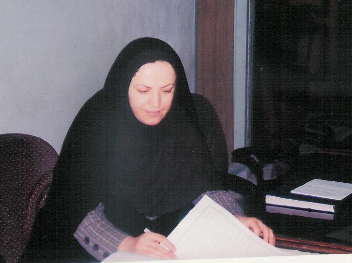

پذيرش > سایت نوشته ها > این سردفتر زن با چند همسری مردان مبارزه می کند
 گفت و گو با ثريا خالدي ، تنها سردفتر زن در چهارمحال و بختیاری گفت و گو با ثريا خالدي ، تنها سردفتر زن در چهارمحال و بختیاری

 این سردفتر زن با چند همسری مردان مبارزه می کند این سردفتر زن با چند همسری مردان مبارزه می کند
5 بهمن 1387 - کانون زنان ایرانی / ترانه بني يعقوب - نسخه قابل چاپ
ثريا خالدي تنها سردفتر زن در استان چهار محال و بختياري است. شغلي كه به نظر خيلي از همشهري هايش شغلي مردانه است و مناسب یک زن نيست .اما با اين همه او با تلاش هايش توانسته اين باور را تغيير دهد و به همه نشان دهد كه تقسيم مشاغل به زنانه و مردانه صحيح نيست و اين توانائي افراد است كه شغل شان را مي سازد. خالدي 29 ساله فارغ التحصيل رشته حقوق است او از سختي ها ؛ مشكلات و در عين حال تجربيات چهار سال كار سر دفتري اش در شهر لردگان ، يكي از شهرهاي كوچك اين استان مي گويد .در منطقه ای که تا حدودی چند همسری رواج دارد ، او می کوشد در حد توانش با آن مقابله کند.
شما تنها سر دفتر زن در استان چهارمحال و بختياري هستيد ؛ هيچوقت نوع بر خورد مراجعه كنندگان با شما به خاطر اينكه زن هستيد متفاوت بوده است ؟
بله .رفتارها ی آنها زمين تا اسمان با يك زن فرق دارد.
چه نوع تفاوتهائي را در برخوردهايشان نسبت به خودتان احساس كرده ايد ؟
اوايل آنها فكر مي كردند كه مردها كار را بهتر انجام مي دهند .من در شهر لردگان كار مي كنم .بيشتر مردم اينجا به خاطر نوع فرهنگ شان خيال مي كنند مردها بهتر از زنان كارها را پيش مي برند . حتي بانك ها با من حاضر به كار نبودند و مي گفتند ما ترجيح مي دهيم با زن ها كار نكنيم انها فكر مي كردند كارشان را خوب انجام نخواهم داد.. اما اكنون توانایی های خودم را نشان داده ام و نوع نگاه انها به من خيلي تغيير کرده است.مراجعانم را راهنمائي مي كنم و اگر انها اشكالي داشته باشند با حوصله براي شان توضيح مي دهم . حالا انها فهميده اند يك زن به خوبي توانائي انجام كارهاي شان را دارد. بعضي از انها مي گويند يك سر دفتر زن خيلي بهتراز مردها كارها را انجام مي دهد . برخوردهای نامناسب شان در اوايل كار خيلي برايم تلخ و آزار دهنده بود اما كم كم سعي كردم اين نگاه را تغيير دهم .
شهري كه شما درآن مشغول به فعاليت هستيد ؛ داراي یک بافت سنتي و مردسالارانه است ؛ كار كردن در يك محيط سنتي چه خوبي ها و بدي هائي دارد ؟
خوبي اش اين است كه اگر تو را بشناسند و اعتماد كنند مراجعات شان به شما خيلي افزايش مي يابد اما (با خنده ) اما خب! سختي هايش خيلي بيشتر است .
چه سختي هائي ؟
سختي ها خيلي بيشتر از ان است كه بخواهم همه شان را بگويم اما به چند نمونه اشاره مي كنم .مثلا وقتي از مراجعه کنندگانم اصل شناسنامه شان را براي تنظيم سند مي خواهم مي گويند مگر ما دزديم كه اصل شناسنامه ما را مي خواهيد .يعني انتظار دارند به خاطر اشنائي مراحل قانوني را رعايت نكنم. مي گويند تو كه ما را مي شناسي ديگر مدرك مي خواهي چكاركني. بارها با اينكه دليل اين كار را براي شان گفته ام اما هر بار براي تنظيم سند خانه يا اتومبيل مدارك شان را همراه نمي آورند .انها براي احراز هويت شان هم حاضر نيستند مدرك معتبر ارائه دهند و زود دلگير مي شوند و اين چيزها را توهين به خود تلقي مي كنند. ولي در شهرهاي ديگر معمولا مردم براي اين جور كارها هميشه شناسنامه همراه شان است و بدون بهانه آن را ارائه مي دهند
خب!چطور با اين افراد كنار مي ائيد و كارشان را راه مي اندازيد ؟
خيلي از مردم به خصوص پير مردها نسبت به من ديد بدي دارند يعني اصلا ديد بدي نسبت به زنها و توانائي شان دارند و اهميت و ارزش خاصي براي زنها قائل نيستند و فكر مي كنند زن ها فقط براي گوشه خانه ساخته شده اند . من سعي مي كنم اعتمادشان را جلب كنم و با دليل ومنطق دليل كارها را براي شان توضيح دهم تا مدارك شان را ارائه دهند. گاهي هم اصلا اين تلاشها فايده ندارد كه در اين جور مواقع يك نفر از باسوادهاي فاميل خودشان را واسطه مي كنم تا راضي شان كنند .هميشه با نرمي و مهرباني اين كارها را انجام مي دهم تا كارها پيش برود .
به نظر مي رسد اين خوبي ها و بدي ها براي زنان جنس متفاوتي دارد. نه ؟
بله. گاهي براي همين ارائه مدارك بيشتر از همكاران مرد به من اعتماد مي كنند مثلا مي گويند زن ها بهتر هستند ودروغ و كلاهبرداري در ذات شان نيست و مدرك شان را ارائه مي دهند تا سند را براي شان تنظيم كنم گاه هم ان مدلي كه گفتم بر خورد مي كنند ..بدي هايش هم اين است كه وقتي مي خواهند خلافي كنند مثلا مي خواهند سندي را كه مالكش مشخص نيست به نام شان كنم و من خودداري مي كنم توهين مي كنند و مي گويند چون تو زني نمي داني چطور بايد كار را انجام بدهي. يا ادم را به كم دل و جراتي به خاطر زن بودن متهم مي كنند .يا حتي موردي بود كه شناسنامه اش را جعل كرده بود و تازه توهين هم مي كرد .اما خب آنها معمولا در اين موارد بيشتر زورشان به زنان مي رسد و صداي شان را بالا مي برند .
پس مراجعه كنندگان تان از شما درخواست كار خلاف هم مي كنند ؟
بارها ازمن چنين خواسته اي داشته اند اما هرگز قبول نكرده ام . مردهاي زيادي اينجا هستند كه به زور زن شان را به دفترخانه من مي اورند تا رضايت او را براي ازدواج مجدد بگيرند اما من هرگز چنين كاري را براي شان انجام نمي دهم چون خوب مي دانم آنها زنان شان را نه با رضايت واقعي كه با اجبار و كتك براي اين كار مي اورند .
اما مگر اين كار غير قانوني است كه انجامش نمي دهيد يا دلايل ديگري داريد ؟
من اصلا با ازدواج مجدد مردان مخالفم و مي دانم كه همسران آنها هم راضي نيستند .خيلي اوقات زنان اين مردان قبل از مراجعه همسران شان پيش من مي ايند و با خواهش وتمنا مي خواهند اين كار را انجام ندهم. من هم اين كار را اصلا انجام نمي دهم به هر حال من يك زنم و شرایط و احساسات آنها را درک می کنم . اما براي اين كار يعني رضايت گرفتن از همسر اول سه شاهد مي خواهم و معمولا اين مردها پشيمان مي شوند البته نه لزوما از ازدواج مجدد بلكه از انجام ان در دفتر خانه من و به سراغ دفترخانه ديگري مي روند .آنها معمولا اين جور مواقع عصباني مي شوند و با توهين سراغ دفترخانه ديگري مي روند و با زور و اجبار و با حضور دو شاهد كارشان را پيش مي برند اما من اين كار را نمي كنم .یعنی در حد خودم سعی می کنم مانع چند همسری مردان شوم.
مهمترين مسائلي كه زنان به خاطر آن به شما مراجعه مي كنند چيست ؟
اينجا مراجعه زنان به دفترخانه واقعا كم است . اگر هم به اينجا بيايند بيشتر به خاطر وكالت است اينكه وكالت اموال را به شوهر يا برادران شان بدهند .در اينجا سندي كه به اسم زن ها باشد خيلي كم است چون مي ترسند زن ها بعدا درباره مالكيت آنها ادعا كنند .اينجا نگاه مردان به ويژه كم تحصيلكرده ها به زنان نگاه از بالاست و حق و حقوقي براي زنان قائل نيستند .
چه تفاوتي بين كار سر دفتران در يك شهر بزرگ با يك شهر كوچك وجود دارد ؟
خيلي تفاوتي وجود ندارد جز همان سختي هائي كه گفتم.مثلا در شهرهاي بزرگ براي انجام كارهاي شان اصل مدرك را ارائه مي دهند اما در شهري مثل لردگان اين كار را اهانت مي دانند .
خانم خالدي! شما شهرلردگان را براي كار و زندگي تان انتخاب كرده ايد ؛ كه از امكانات اوليه تفريحي و فرهنگي بي بهره است. اين شما را ناراحت نمي كند ؟
چرا مشكلات كه خيلي زياد است به خصوص كه همسرم هم در دانشگاه شهركرد تدريس مي كند و من بيشتر اوقات در اينجا تنها هستم اما چون به رشته ام علاقه مندم و و اقعا هم دلم مي خواهد مردم اين شهر پيشرفت كنند كار در اين جا را با عشق و علاقه زياد انجام مي دهم .
اما انچه بيشتر ازارم مي دهد نبود مكانهاي تفريحي است اينجا نه پاركي هست و نه مكان ورزشي مناسبي براي زنان. من همه اوقات بيكاريم را با كتاب خواندن پر مي كنم و البته براي ازمون كارشناسي ارشد هم درس مي خوانم
زنان بومي و تحصيلكرده شهر شما اوقات فراغت شان را چگونه مي گذرانند ؟
دختران اينجا خيلي زود ازدواج مي كنند .آنها بيشتر وقت شان را در خانه مي گذرانند .نبود امكانات تفريحي و رفاهي بيشترين مشكل انان است .اين نبود امكانات به خصوص براي كودكان خيلي مضر است و گاه دلم براي بچه ها مي سوزد شايد همين كمبود امكانات مجبورم كند كه به خاطر دخترم تا چند سال ديگر از اين شهر كوچك بروم.
کانون زنان ایرانی
ارسال به
بالاترین
،
توییتر
،
فریندفید
،
فیسبوک
در همين بخش :
 یک خبر تلخ؟ یک قانونشکنی؟ یک تصمیم بخشنامهای جدید؟ یک خبر تلخ؟ یک قانونشکنی؟ یک تصمیم بخشنامهای جدید؟
چرا بایست به سکسوالیته پرداخت؟ / نفیسه آزاد
آزارجنسی خانگی؛ «قربانی» نه، «نجات یافته»
زنان، بزرگترین بازندگان بهار عرب
سانسور از دیدگاه جنسیتی/الهه امانی
ديگر بخش ها :
طرح یک میلیون امضا
|
مقالات
|
سایت نوشته ها
|
اخبار
|
گزارش كمپين
|
گفت و گو
|
علیه سکوت
|
كوچه به كوچه
|
نامه های شما
|
گزارش ویژه
|
گفتگو با اعضا
|
ویژه سالگرد کمپین
|
تصویر برابری
|
دل آرام علی
|
تریبون
|
مقالات
|
تاریخ شفاهی
|
خارج از چارچوب
|
کتابخانه
|
درباره کمپین
|
کمپین در شهرها
|
کمپین در بند
|
صدای تغییر
|
ویژه 22 خرداد
|
لایحه حمایت از خانواده
|
گالری
|
عشا مومنی
|
امیر یعقوبعلی
|
خدیجه مقدم
|
راحله عسگری زاده و نسیم خسروی
|
پروین اردلان،جلوه جواهری، مریم حسین خواه، ناهید کشاورز
|
زینب پیغمبرزاده
|
سعیده امین، سارا ایمانیان، محبوبه حسین زاده، ناهید کشاورز و همایون نامی
|
احترام شادفر
|
نسیم سرابندی زاده،فاطمه دهدشتی
|
وبلاگ مهمان
|
پرونده خرم آباد
|
دستگیری ها
|
مریم مالک
|
پرستو اللهیاری
|
مهرنوش اعتمادی
|
سمیه رشیدی
|
Other Languages
|
همراهان
|
«فراخوان کمپین ده روز با بهاره هدایت»
| English
|